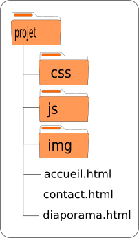
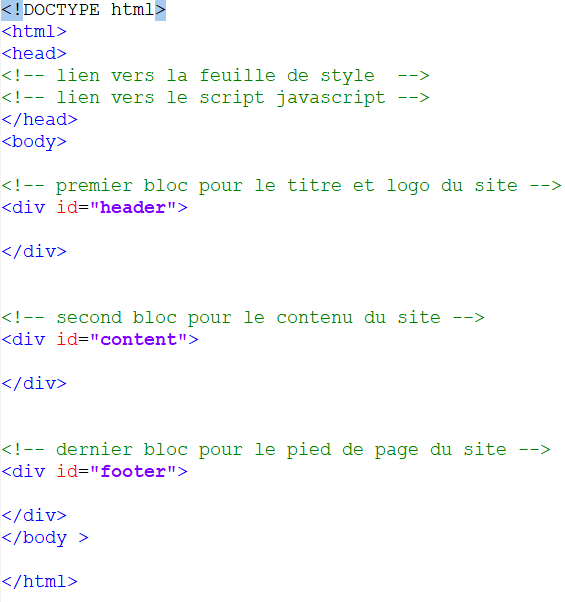

Introduction
Ce mini projet a pour objectif de créer un site WEB constitué de trois pages écrites en langages HTML, CSS et JAVASCRIPT. Le sujet traité par le site est libre mais doit être relatif à la vie lycéenne comme une sortie scolaire, un enseignement suivi, la présentation d'un club, les activités sportives ou artistiques au lycée, etc.
Les trois pages du site WEB se répartissent ainsi:
- La première page est l'accueil du site;
- La seconde page est une exposition de photographies;
- La dernière page contient un formulaire de contact.
La charte technique du site
Les fichiers du site sont rassemblés dans un même dossier nommé projet. 
- Le dossier projet contient les dossiers css, js et img ainsi que les trois fichiers HTML accueil.html, contact.html et diaporama.html.
- Le dossier css contient la feuille de style style.css.
- Le dossier js contient les 2 fichiers javascript slide.js et formulaire.js.
- Le dossier img contient toutes les photos et images du site WEB.
Les fichiers HTML
Les fichiers HTML ont la même structure appelée squelette utilisé pour toute page HTML avec les balises html, head, title, body, etc. Le contenu placé entre les balises <body> et </body> est divisé en trois blocs délimités par les balises html <div> et </div>.Un modèle de page web est donné pour la mise en place de ces trois blocs. Il sera à adapter pour chacune de vos pages.

- Le premier bloc contient le titre du site WEB présent sur les trois pages WEB.
- Le second bloc est dédié au contenu différent pour chaque page du site.
- Le dernier bloc est un pied de page que l'on retrouve sur les trois pages.
Titre du site web
Le premier bloc <div> et </div> a un attribut id de valeur header. La mise en forme css se fait sur cet identifiant. Il ne faut pas le modifier sous peine de perdre tous les apports graphiques.
Dans ce bloc vous devez insérer:
- Le titre du site qui est un titre de niveau 1
- Un logo pour le site qui est une image dont la taille ne dépasse pas les 160 px.
Contenu des pages web
Le second bloc <div> et </div> a un attribut id de valeur content. La mise en forme css se fait sur cet identifiant. Il ne faut pas le modifier sous peine de perdre tous les apports graphiques.
Dans ce bloc vous devez insérer:
- Pour la page accueil, un texte de plusieurs lignes, une image et au moins deux liens
hypertextes vers des sites externes de votre choix en lien avec le sujet traité.
- Les contenus seront placés dans des paragraphes,
- L'image a une largeur inférieure à 800px et une hauteur inférieure à 400px.
- Pour la page diaporama, vous devez insérer des photos et deux boutons pour passer d'une photo à l'autre.
- Le bouton placé à gauche contient le texte <.
- Les images sont placées dans une liste non ordonnée ul. Attention aux dimensions des photos qui doivent être adaptées à la largeur de la page WEB.
- Le bouton de droite contient le texte >.
- La page contact contient un formulaire avec les champs nom, message et un bouton d'envoi.
- Les balises labels qui ont pour valeur Votre nom et Votre message.
- La balise input pour la saisie du nom a pour identifiant nom. D'autres attributs peuvent être ajoutés.
- La balise textarea permet la saisie d'un texte sur plusieurs lignes. Vous trouverez de la documentation en ligne sur le site de Mozilla. Cette balise a pour identifiant message.
- Le bouton d'envoi du message et de type submit et a pour valeur Envoyer.


Ce formulaire se crée avec la balise form et contient les éléments suivants:
Remarque: aucune balise div n'est ici utile contrairement à ce qui a été fait en classe.
Le pied des pages web
Le troisième bloc <div> et </div> a un attribut id de valeur footer. La mise en forme css se fait sur cet identifiant. Il ne faut pas le modifier sous peine de perdre tous les apports graphiques.
Dans ce bloc vous devez insérer:
- Votre nom et prénom, votre classe et la date de création du site sous forme de liste non ordonnée ul.
- Le mot NSI qui sera centré dans un paragraphe.
- Les liens vers les autres pages web du site sous forme de liste non ordonnée. Ces liens diffèrent selon les pages.
L'affichage en CSS
La feuille de style est donnée et se nomme style.css. Vous devez l'insérer sous forme de lien pour que vos trois pages web puissent l'utiliser.
Le titre de la page
Le premier bloc div d'identifiant header est réservé à l'entête du site. Sa mise en forme graphique dépend des propriétés css à lui appliquer. Les deux éléments html contenus dans la balise div sont les balises h1 et img. La mise en forme se fait en ajoutant des classes css.
- Pour le titre de niveau 1, il faut lui attribuer la classe titre.
- Pour le logo, il faut lui attribuer la classe logo.
Le contenu de la page d'accueil
Le contenu ne requiert aucune classe spéciale. La mise en forme se fait avec des propriétés css directement appliquées aux balises qu'il contient. Les balises html utilisées pour le contenu sont des balises de paragraphe, d'emphase, de listes numérotées et non numérotées, de liens hypertextes et d'images.
Le contenu de la page diaporama
Sans l'application des propriétés css, le rendu de la page est très éloigné du résultat final. Pour que les changements apparaissent :
- L'identifiant du bloc div change. On remplace content par diaporama.
- Pour faire disparaître les puces, on ajoute la classe diapo à la balise ul.
- La mise en forme des boutons se fait avec les classes moins pour le bouton de gauche et plus pour le bouton de droite.
Le contenu de la page contact
Le formulaire ne requiert aucune classe particulière. L'application des propriétés css se fait directement sur les balises html du formulaire.
Seule le bouton d'envoi nécessite l'ajout de la classe bouton pour prendre l'apparence souhaitée.
Le pied de page
Le pied de page se partage en trois parties : gauche, centre et droite. Ce sont les noms des trois classes css à attribuer aux trois balises principales qui constituent le pied de page.
Personnalisation
Vous devez modifier quelques propriétés css en éditant la feuille de style.
- Changer la couleur de fond de l'entête du site (bleu) dans une couleur de votre choix. La propriété css est background.
- Changer la couleur de fond du pied de page (gris) dans une couleur de votre choix.
- Changer la couleur des liens situés dans le pied de page dans une couleur de votre choix.
- Changer la couleur des boutons du diaporama dans une couleur de votre choix.
- Changer la couleur du bouton d'envoi du formulaire et la couleur de sa bordure dans une couleur de votre choix..
Interactivité en JAVASCRIPT
L'interactivité est créée pour le diaporama et le formulaire. La page d'accueil n'est pas concernée. On donne deux fichiers javascript dont un sera à compléter. Les fichiers sont slide.js et formulaire.js. Pour que les pages html chargent les scripts, vous devez ajouter les liens vers ces 2 fichiers.
Le diaporama
La page contenant le diaporama n'affiche qu'une seule photo. Le fichier javascript slide.js contient deux fonctions qui permettent d'afficher la photo précédente ou la photo suivante que la page contient.
- La fonction changeImageDroite() affiche la photo suivante et s'applique au bouton de droite.
- La fonction changeImageGauche() affiche la photo précédente et s'applique au bouton de gauche.
Ajouter dans le code html de la page diaporam.html les événements répondants à clic de souris et exécutant les deux fonctions ci-dessus.
Si tout se passe bien, le diaporama permet d'afficher les différentes photos en les faisant défiler avec les boutons.
Le formulaire
En l'absence de serveur, il n'est pas utile de créer une requête http avec la méthode post ou get. On se contente d'afficher une fenêtre d'alerte contenant les informations ajoutées au formulaire.
Éditer le fichier formulaire.js qui contient la fonction envoiFormulaire() à compléter. Cette fonction contient :
- une variable nom créer avec le mot let.
- la méthode document.getElementById("nom").value récupère la valeur saisie dans le champ d'identifiant nom et l'affecte à la variable nom.
- Créer une seconde variable msg et lui affecter la chaine de caractères saisie dans le champ message.
- Ajouter l'instruction d'affichage du nom et du message saisi sous forme d'une fenêtre alert.
- Arranger l'affichage pour qu'il soit sur deux lignes ! Une ligne pour le nom et une autre pour le message.
Lorsque votre fonction envoiFormulaire() est prête, modifer le code html de la page de contact pour que la fenêtre d'alerte s'affiche quand on clique sur le bouton d'envoi.